Version 3.0 — REST edition (PI Web API / Aspen Process Data REST)
What changed in v3.0: the add-in now talks to the historians over their
REST web services — the PI Web API for OSIsoft/Aveva PI and the Aspen Process
Data REST service for InfoPlus.21. No local drivers are required anymore
(no PI OLEDB, no SQLplus ODBC, no PowerShell), and the add-in behaves identically on
Windows and macOS. A new Step Interpolated extraction method was added, passwords
can be securely remembered in the OS credential vault, and the server list was simplified.
Table of contents
Introduction
This add-in automates data extraction from Aspentech IP.21 and OSIsoft/Aveva PI
historians, so you can use JMP to diagnose manufacturing problems and monitor tags daily
and weekly.
System requirements
JMP 18 or later (the add-in uses JMP's embedded Python).
Network access (enterprise network or VPN) to the historian's REST endpoint:
PI: the PI Web API address, e.g. https://piserver.company.com/piwebapi
IP21: the Aspen Process Data REST address, e.g.
http://ip21server.company.com/ProcessData/AtProcessDataREST.dll
Read permissions on the historian (your Windows/AD account, or a login provided by
the administrator).
Unlike v2.x, no client drivers are needed: the former
requirements (Aspen SQLplus ODBC driver, PI OLEDB Enterprise, PI Process Book) are gone.
If a server is missing from the list or its WebAPI URL is unknown, contact your
administrator.
Add-in installation
Download the .jmpaddin file and double-click it. JMP asks to install (or
re-install) the add-in — click Install. A new menu entry appears under
Add-Ins.
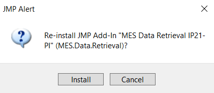
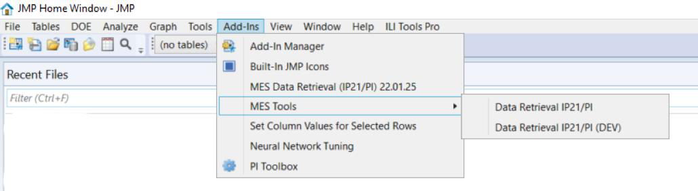
On first use the add-in prepares its Python environment automatically (it may install
the requests package once — this needs internet access through your proxy).
Getting started — overview
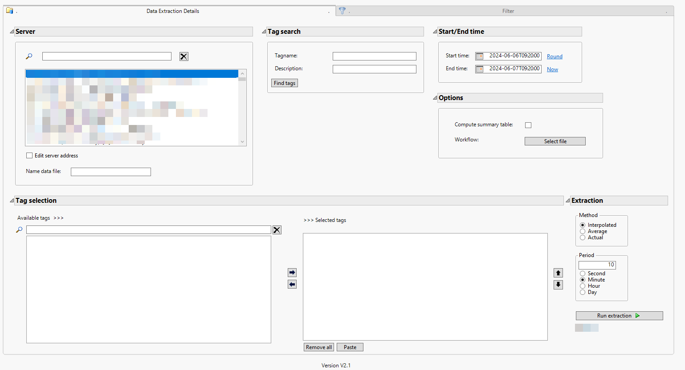
Screenshot from v2.x — the v3 window is identical except for the
simplified “Server details” panel described below.
The main interface allows you to:
Select a server from the server list — entries display as
site [type] - server (the site name comes from the server list; when
empty, the server name is shown) — or enter the details manually
(Edit server address), and set the name of the extracted table.
Find tags by tag name and/or description. The search is uncapped:
it pages through the server until all matches are returned.
Add selected tag(s), or paste tag names copied from a spreadsheet (remove any unit
or description from pasted names).
Set options (workflow, summary table).
Choose the start and end date (defaults: now and 24 h earlier).
Choose the extraction period (10 minutes by default).
Add filter(s) on tag(s).
Manage the added filters (including nesting).
Server details & authentication
Check Edit server address to view or override the connection fields:
Field
Meaning
Server name (mandatory)
PI Data Archive server name, or IP21 data source name (usually the IP21 host).
WebAPI URL (mandatory)
The REST endpoint. Tolerant input: with or without https:// and a
trailing /; a bare host is completed automatically to
/piwebapi (PI) or /ProcessData/AtProcessDataREST.dll (IP21).
PI AF server (optional)
PI Asset Framework server — reserved for the upcoming attribute search.
Server type
IP21 or PI.
Authentication is attempted silently first (Windows single sign-on /
Kerberos). If the server requires an explicit login, a dialog asks for username and
password. Tick “Remember on this computer” to store them securely in the
Windows Credential Manager or macOS Keychain — encrypted
by the operating system, never written to files, and removed automatically if the password
stops working.
Extraction methods
Method
What you get
Interpolated
Values interpolated at the chosen period.
Average
Time-weighted averages per period.
Actual
The raw recorded values (no period).
Step Interpolated(new in 3.0)
Staircase interpolation: the last recorded value is held until the next change,
sampled at the chosen period. Recommended for setpoints, recipe steps, discrete
and slow-changing tags.
The extraction runs in parallel batches with a progress bar; a high row limit per tag
(1,000,000) protects the server. Please notify your OT/IT team before massive
extractions.
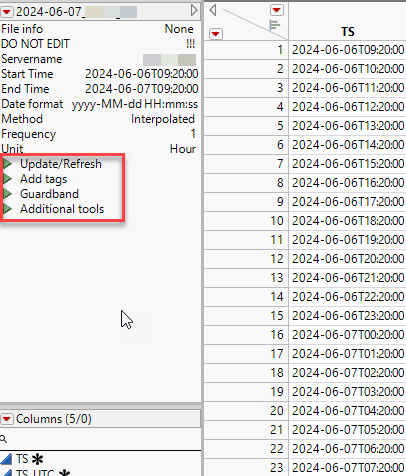
Filters management
Add filters
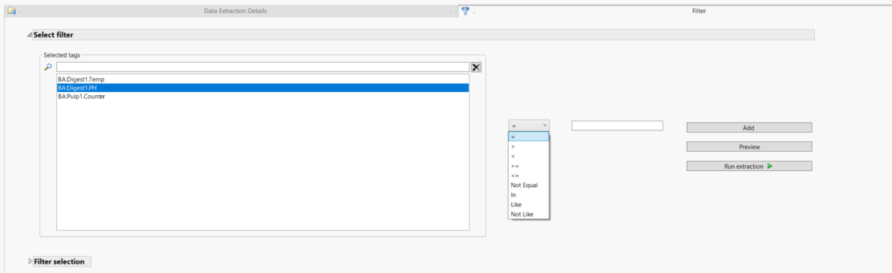
Select the tag to filter on.
Select the comparator: > < >= <= for continuous numeric
tags; In, Like, Not Like for discrete/text
tags; = and Not Equal for both.
Enter the filter value. With In, list several values separated by the
separator you define (e.g. VALUE1 / VALUE2 / VALUE3 with separator /).
Click Add, or Preview (discrete/text tags) to list the distinct
values of the tag over the selected window.
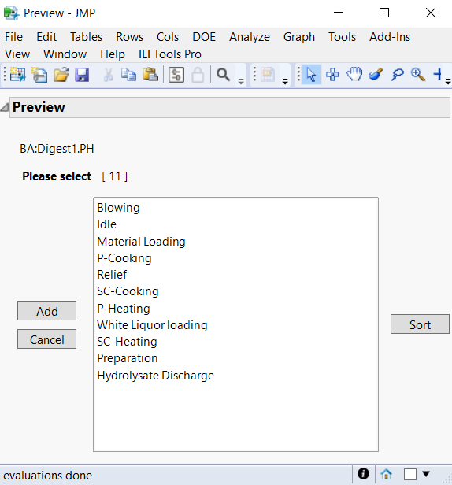
How filters are executed in v3.0: for IP21 they are part of the SQL sent
to the server (unchanged from v2.x). For PI, simple comparisons are evaluated by the PI
server itself (filterExpression); Like/Not Like/
In are applied by the add-in after extraction. The result is the same in all
cases. On PI, the Preview lists values without applying the already-registered
filters (they are applied at extraction).
Modify filters
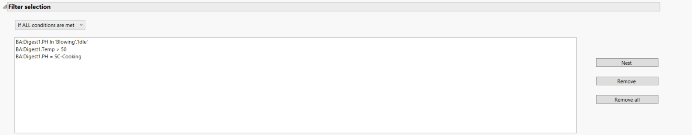
Choose the construction type: If ALL conditions are met (AND) or
If ANY conditions are met (OR). Changing it removes nested filters.
Select a filter to modify.
Remove selected filter(s) or all. Select 2 filters to Nest them:
with ALL, nesting gives (F1 OR F2) AND F3; with ANY,
(F1 AND F2) OR F3. At most 2 filters can be nested.
Table of extracted data
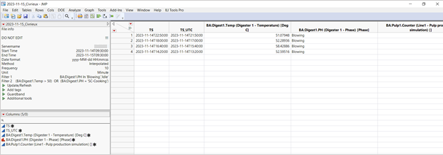
After extraction a JMP table opens (default name: today's date + server name) with:
Table variables recalling the extraction settings (Servername,
Start/End Time, Method, Frequency, Unit, Filters…). Do not edit them manually — the
additional scripts use them.
The extracted tags; the first two columns are the timestamps TS
(local time) and TS_UTC. Do not delete the timestamp columns.
Additional scripts
Update / Refresh
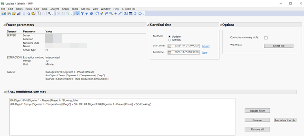
Frozen parameters — server, WebAPI URL, extraction method and tags cannot
be changed here.
Choose Update or Refresh. In v3.0 the window is
prefilled with Start = the oldest timestamp present in the table and
End = now.
Update extends/completes the table. If the chosen window
overlaps existing rows, the overlapping rows are replaced by the
fresh extraction (no duplicated timestamps).
Refresh re-extracts and replaces the whole table content.
The existing rows are only removed after the new extraction
succeeded.
Options (summary table, workflow).
Remove or update registered filter(s) for this run only.
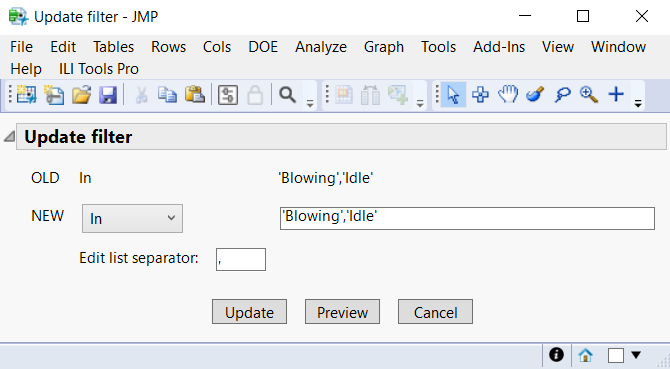
The Update filter dialog lets you pick a new comparator, preview the possible
values over the new window, edit values and apply the update. A table variable then
documents that a filter was updated during the run.
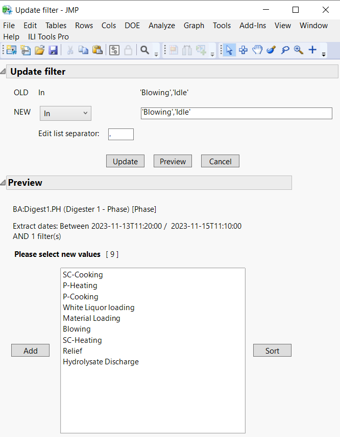
Add tags
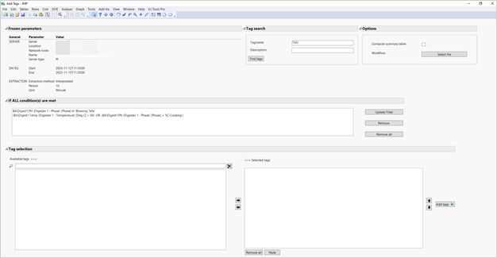
Adds new tags to the existing table using the frozen extraction settings. Find tags by
name/description (your last search is recalled), add or paste them, choose options, and
optionally adjust filters for this run — same mechanics as the main window.
Guardband
The Guardband script analyzes and compares batches of a parameter over time:
it sorts by TS_UTC, identifies batches (Lot# / Sublot#), aligns them to the
smallest batch, transposes them to columns, and computes control limits
(mean ± 3σ) to build the guardband chart. Guardband tables are saved under
Documents/Guardband/<server>/<ID>/<parameter>/ and can be
reused as reference for future batches.
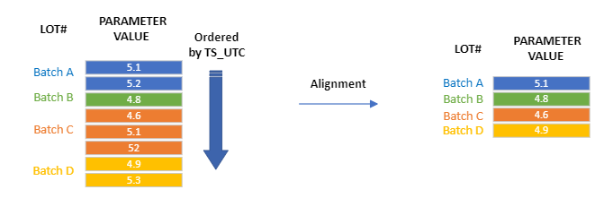
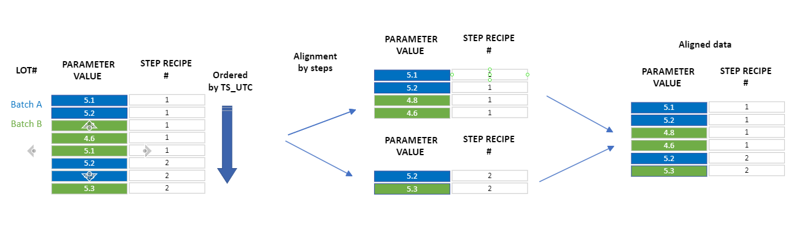
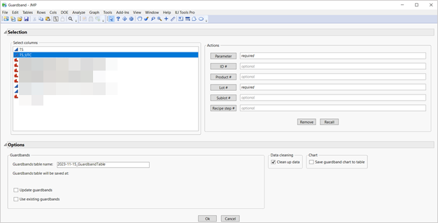
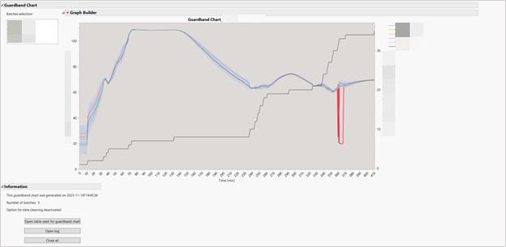
In the chart: select the batches displayed, OOC points (outside UCL/LCL) are shown in
red, and you can open the underlying table and the cleaning log.
Additional tools
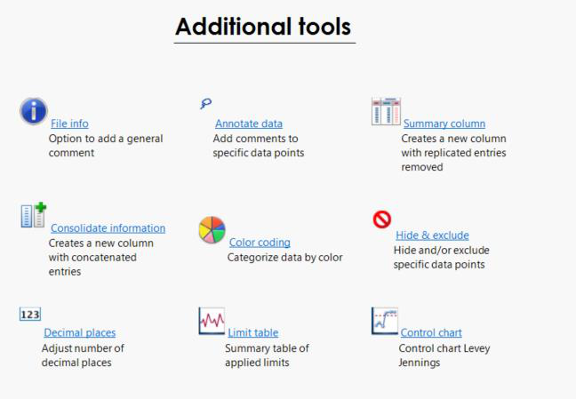
File info — add a general comment (saved as a table variable).
Annotate data — comment selected values of a discrete/text tag in
a Comment column (first point or all points; add or replace).
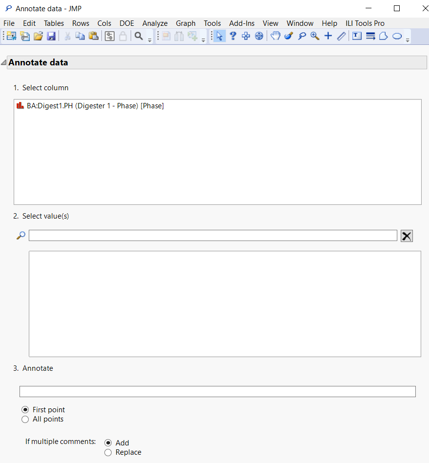
Summary column — per-value summary of a discrete/text tag,
optionally with the first timestamp of each value.
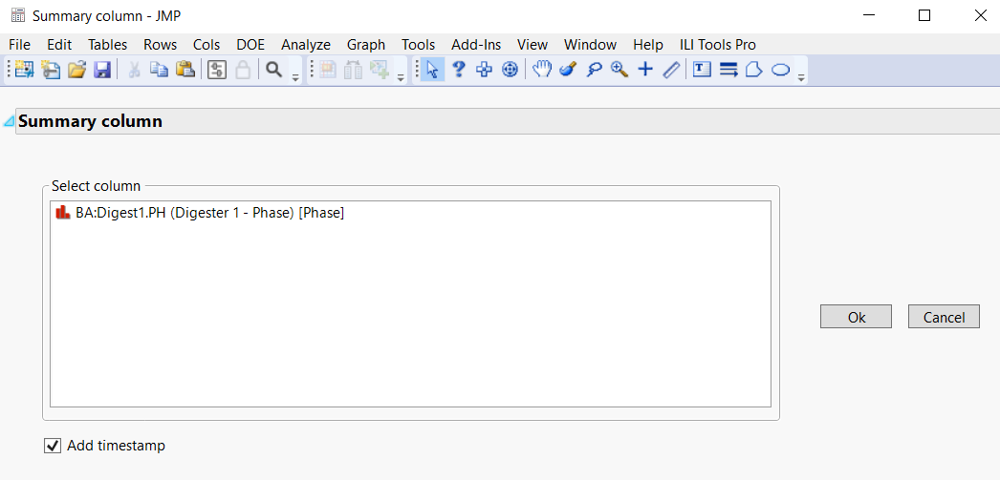
Consolidate information — combine several tags into one new
column with a chosen delimiter (optionally a JMP multiple-response column).
Color coding — color rows by a tag's values (color codes or
gradients).
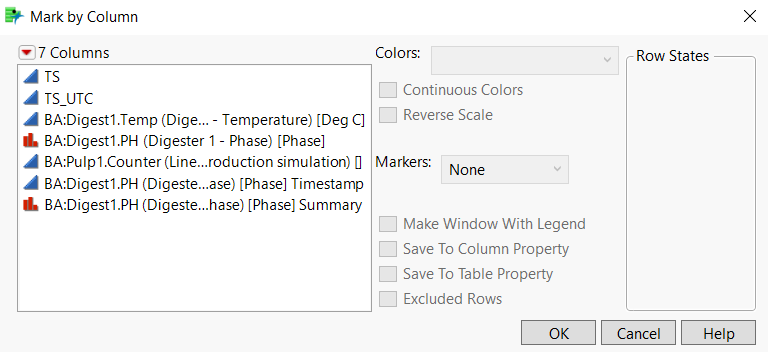
Hide & exclude — select rows with JMP's selection platform and
hide and/or exclude them.
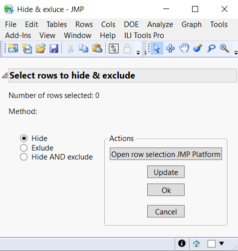
Decimal places — set displayed digits per tag.
Limit table — enter LSL/LCL/UCL/USL manually or compute
Levey-Jennings limits from selected rows; values are stored in the tags'
Spec Limits / Control Limits column properties.
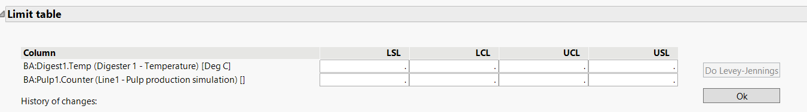
Control chart — browse control charts across the continuous tags.
Troubleshooting
Every REST request URL is written to the JMP log
(Ctrl+Shift+L / Cmd+Shift+L) — the first thing to check when something fails.
“No WebAPI URL configured” — the selected server has no REST address; add
it in the server list or under Edit server address.
Login window appears repeatedly — the password is wrong or expired; stored
credentials are deleted automatically on failure, re-enter them.
SSL/certificate error in the log — the server uses a certificate your
machine does not trust. Ask IT to install the CA, or (self-signed plant servers
only) the administrator can disable verification in the add-in configuration.
Python setup failed — see the “Python init” line in the log; the add-in
needs one-time internet access to install the requests package.
Screenshots marked as v2.x show the previous server-details fields
(Location/Extension/Shortname) which were removed in v3.0. Guide regenerated from the
v2.0 PDF (2023-11-17) and updated for add-in v3.0 (2026).